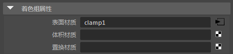

体积 - UFO 场景
本制作教程介绍了如何对体积进行照明和渲染，以及渲染过程中遇到某些噪波时的其他一些相关问题。此场景有可能出现“高亮杂点”现象，因为场景中包含很小的可见光源、高度镜面反射的曲面和 _atmosphere_volume_。
场景照明
场景使用 area_light 进行照明，并且 light_shape 设置为圆盘(Disk) （月光）。UFO 的灯光是已转化为几何体灯光的几何体。除此以外，还有一个指向 UFO 下面的 spot_light 和一个位于右侧的区域光。MtoA 的“渲染设置”(Render Settings)窗口中已启用 _Atmosphere_volume_。
月光照亮的云 - 体积着色器
- 场景的上方、圆盘灯光的下方放置了一个多边形球体。这将用作“云层”。它位于 disk_light 与场景之间。另外，UFO 下方靠近地面的地方也放置了一个完全相同的球体，用于表示地面的雾。
信息：有关将体积渲染为云的详细信息，请单击此处。
 |
云着色器指定给一个表示云层的球体
- 为球体指定一个 standard_volume 着色器（将球体的 step_size 增大到 0.1，使它渲染为体积）。将一个 Maya“云”纹理连接到 transparent_color。
渲染后，云应类似下图：
在启用了 atmosphere_volume 的情况下，圆盘灯光表示月光。
噪波
此场景存在某种形式的采样噪波，我们通常称之为“尖峰型噪波”或“高亮杂点”。它们是一些隔离的、在动画帧之间来回跳动的超亮像素。单纯增加渲染器中的采样数，很难去除此噪波。
渲染结果中出现高亮杂点（集中在灯光和光泽的镜面反射金属 UFO 材质周围）。
此场景有一些导致噪波的因素，如高度镜面反射的曲面、atmosphere_volume 和很小的光源。下面我们将介绍修复这些“噪波”问题的方法：
几何体灯光
UFO 的灯光由同样已转化为 mesh_light 的几何体组成。mesh_light 创建后，被放置在与生成它的几何体相同的位置。在对光线进行采样时，这可能会是个问题，并可能会出现阴影噪波。解决此问题的一个方法是禁用几何体的 casts_shadows 和 _receive_shadows_。另一个解决方法是将灯光从对象移开（参见下图）。
| 在与网格相同的位置生成 mesh_light | 从网格中移除 mesh_light 可以减少噪波 |
光线切换
另一个减少高亮杂点的方法是使网格对镜面反射光泽光线不可见。这可以通过 ray_switch_shader 着色器来实现。使用此方法，您可以控制任何可能导致出现高亮杂点问题的着色器。例如：
- 将 ray_switch_shader 指定给在“镜面反射”(Specular)*属性中使用了修改的着色器（例如会返回黑色的着色器，或 *specular_weight 低得多的着色器）的明亮物体。
| ray_switch 着色器 | 未使用 ray_switch 着色器 |
在漫反射/镜面反射中可见
减少噪波的另一种方法是，禁用导致噪波的网格的“漫反射”(Diffuse Reflection)和/或“镜面反射”(Specular Reflection)属性。这些属性位于网格的 Arnold 属性中。
| 在_漫反射_和在_镜面反射_中可见：启用（镜面反射/漫反射噪波）。 | 在_漫反射_和在_镜面反射_中可见：禁用（无噪波）。 |
区间限定采样值
一个可减少噪波的选项是区间限定渲染的像素的采样值。但是，这将区间限定整个图像的像素。解决此问题的一个方法是区间限定特定着色器的像素。为此，请执行以下操作：
- 使用鼠标中键将一个 Maya“区间限定”节点拖到要区间限定的材质（在本例中是一个 Ai 标准着色器）的着色组的“表面材质”(Surface material)属性上。

“区间限定”(Clamp) -> standard_surface 着色器的_“着色组”(Shading Group)的“曲面”(Surface)_材质属性
- 将 standard_surface 的“outColor”连接到_“区间限定”(clamp)_的“input”属性。
着色网络应类似下图：
尝试降低“区间限定颜色属性”(Clamp Color Attributes)中的“最大”(Max)值
| 未使用区间限定 | 区间限定最大值：1 |
在下面的示例中，一个 Ai 标准着色器的镜面反射属性已连接到一个 Maya 区间限定节点。然后，该区间限定节点连接到 Ai 光线切换着色器的“光泽”(Glossy)属性。它将充当一个次光线区间限定，而不是“渲染设置”(Render Settings)窗口中的常规区间限定。这样，既可以将范围保持在直接高光内，又能控制任何次光线噪波。
大气体积高亮杂点
在下图中，您可以看到启用 atmosphere_volume 对场景有何影响。
启用 atmosphere_volume 使地面材质上出现了一些“高亮杂点”。此材质具有一定的_镜面反射_，因此导致出现高亮杂点。在图像的前景中，这一点更为明显。一种减少“高亮杂点”的简单方法是降低地面材质的镜面反射度。如果这样不行，将 specular_samples 增大到 4 会有助于去除高亮杂点。
| specular_samples：2。高亮杂点可见 | specular_samples：4。无高亮杂点可见。 |